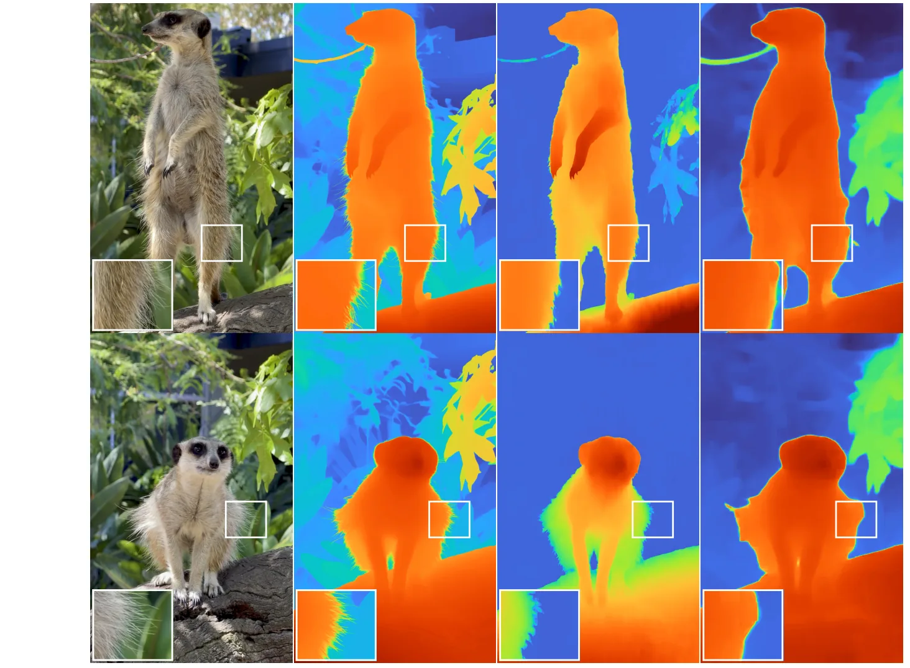
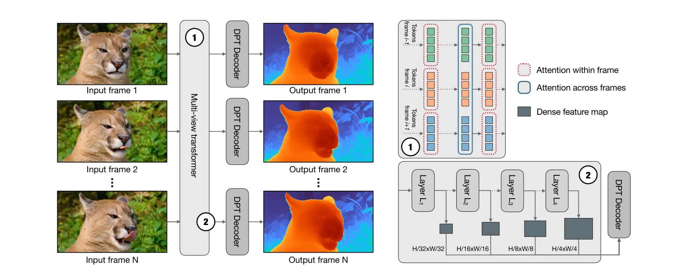
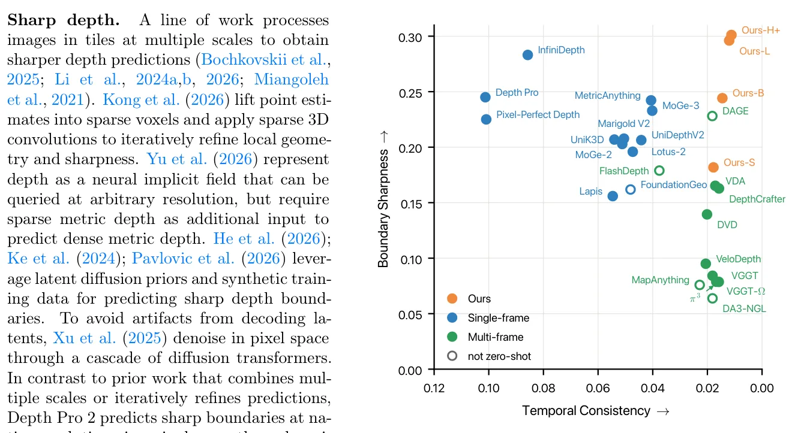
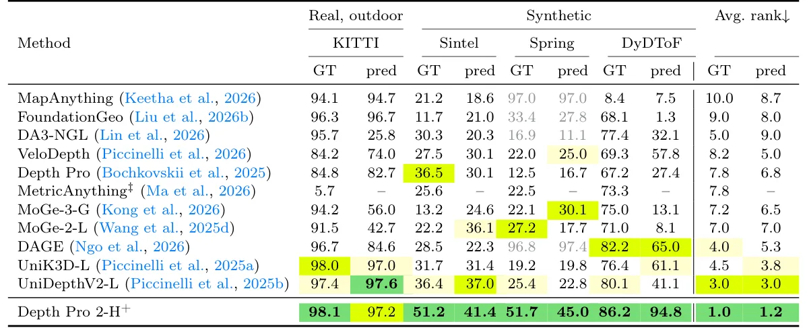

O dilema da profundidade monocular: nitidez versus estabilidade
Estimar profundidade densa a partir de uma única câmera (monocular) é uma tarefa fundamental para visão computacional, mas historicamente esbarra em um compromisso difícil. Métodos projetados para imagens estáticas tendem a produzir mapas de profundidade com bordas extremamente nítidas, preservando detalhes finos como pelos ou texturas complexas. No entanto, quando aplicados a vídeos, esses métodos falham em manter a consistência temporal: a profundidade estimada para um mesmo objeto flutua frame a frame, criando um efeito de "piscar" visualmente perturbador.
Por outro lado, métodos otimizados para vídeos priorizam a consistência temporal, usando atenção temporal sobre múltiplos frames ou priors de difusão. Embora estabilizem a cena no tempo, eles frequentemente operam em resoluções reduzidas ou aplicam suavizações agressivas que borrão as bordas dos objetos. A análise dos autores mostra que existe uma dicotomia clara: métodos de imagem ficam no extremo da nitidez com instabilidade temporal, enquanto métodos de vídeo ficam na consistência com perda de detalhe.
Este trade-off limita aplicações práticas que exigem ambos os atributos simultaneamente, como a criação de efeitos de desfoque de fundo (bokeh) sintético em vídeos de alta qualidade ou a navegação autônoma em tempo real. Para separar corretamente um sujeito do fundo, é necessário um mapa de profundidade preciso, nítido nas transições e estável ao longo do tempo. É neste espaço vazio que o Depth Pro 2, da Apple, se posiciona.

A arquitetura: Transformer Multi-View em Resolução Nativa
A inovação central do Depth Pro 2 não é apenas uma melhoria incremental, mas uma reavaliação da arquitetura para lidar com variabilidade de entrada. O modelo é um transformer multi-view leve que ingere um número flexível de frames (de 1 a 32) e os processa conjuntamente. Ao invés de tratar cada frame isoladamente ou depender de mecanismos temporais complexos e pesados, o modelo usa atenção cruzada (cross-attention) para alinhar as previsões entre frames.
A arquitetura inicia com um encoder baseado em ViT (Vision Transformer), pré-treinado para processamento de imagem única, mas adaptado para o contexto multi-frame. Os primeiros terços dos blocos do transformer utilizam apenas auto-atendimento (self-attention) dentro do mesmo frame para capturar características de baixo nível de forma eficiente. Nos dois terços restantes, o modelo alterna entre auto-atendimento intra-frame e atenção inter-frame. Isso permite que o modelo compartilhe informação espacial entre frames sem perder a capacidade de processar imagens únicas.
Um detalhe crucial de design é a invariância à permutação de frames. O modelo não codifica a ordem temporal dos frames na posição dos tokens. Isso torna a rede equivariante, permitindo que ela processe qualquer número de frames e reutilize pesos de checkpoints pré-treinados em imagens sem necessidade de treinar novos blocos para o contexto de vídeo. Isso simplifica o treinamento e aumenta a robustez.
Preservando detalhes: Processamento em Resolução Nativa
Para combater o borramento de bordas, o Depth Pro 2 opera na resolução nativa da imagem de entrada. Muitos métodos anteriores reduziam a resolução para economizar memória ou computação, o que inevitavelmente suavizava detalhes finos. O Depth Pro 2 inicializa seu transformer a partir dos pesos do DINOv3, um modelo específico para gerar características densas e de alta resolução.
As imagens são divididas em patches de 16x16 pixels, transformados em tokens. Para codificar a posição espacial desses tokens, os autores usam embeddings rotatórios 2D (RoPE). Uma escolha importante foi normalizar as coordenadas dividindo pelo lado mais longo da imagem, preservando a proporção (aspect ratio). Normalizar por cada eixo independentemente descartaria informações sobre a forma da imagem, o que é prejudicial para a precisão geométrica.
O decoder utilizado é o DPT (Dense Prediction Transformer), que extrai tokens em diferentes níveis de profundidade do transformer, monta mapas de características em resoluções variadas e os projeta para uma dimensão de canal comum. Isso permite que o modelo capture contextos globais e locais simultaneamente, essencial para prever mapas de profundidade densos e precisos.
Da profundidade relativa à métrica: o papel da distância focal
Um dos grandes desafios da estimativa monocular é a escala. Redes neurais tendem a prever profundidade relativa (qual objeto está mais perto do que outro), mas não a distância absoluta em metros. O Depth Pro 2 aborda isso predizendo profundidade inversa normalizada pela distância focal da câmera. Isso significa que a rede aprende a geometria da cena em relação ao campo de visão (FOV) do sensor.
Para recuperar a profundidade métrica real (em metros), o modelo precisa da distância focal. O Depth Pro 2 inclui um estimador leve de campo de visão que processa as imagens de entrada para prever o FOV, convertendo-o em distância focal. Se os dados intrínsecos da câmera (EXIF) estiverem disponíveis, o modelo os utiliza diretamente, ignorando o estimador. Essa abordagem híbrida garante que o modelo seja útil tanto em cenários com metadados completos quanto em situações onde a informação da câmera deve ser inferida.

Treinamento simplificado: um único currículo
Muitos métodos de estado da arte utilizam currículos de treinamento complexos e multi-etapas, alternando entre datasets de imagem e vídeo em fases distintas. Os autores do Depth Pro 2 adotam uma abordagem mais direta: treinam uma única rede em clipes de 1 a 32 frames, misturando datasets de imagem única, vídeo e visão multi-ângulo.
Ao treinar com imagens únicas, o modelo aprende a inferir a escala métrica a partir de um único frame, aproveitando a informação da distância focal. Ao treinar com vídeos, ele aprende a minimizar a flutuação temporal através de uma perda de consistência temporal. Essa mistura permite que o modelo aprenda a generalizar para ambos os domínios sem a necessidade de ajustes manuais complexos ou re-treinamento parcial. A eficiência do treinamento é um benefício colateral importante desta arquitetura unificada.
Resultados: Rompendo a fronteira de Pareto
A avaliação do Depth Pro 2 foi realizada em configurações zero-shot, testando o modelo em datasets que não foram usados no treinamento. Os datasets incluem iBims, Middlebury, KITTI, Sintel e Spring, entre outros. A métrica de precisão métrica (delta1) mostra que o Depth Pro 2 lidera em comparação com métodos de imagem única e de vídeo, tanto com intrínsecos conhecidos quanto estimados.
Para nitidez de bordas, os autores usam a pontuação F1 baseada em bordas. O Depth Pro 2 alcança as melhores pontuações em vários datasets, superando métodos como InfiniDepth que são conhecidos por sua nitidez. Isso confirma que operar em resolução nativa e usar o decoder DPT eficazmente preserva os detalhes finos.
A consistência temporal foi medida através do jitter (flutuação) em sequências de vídeo. O Depth Pro 2 apresenta jitter significativamente menor que métodos de imagem única, rivalizando ou superando métodos de vídeo dedicados. O gráfico de nitidez versus consistência temporal mostra o Depth Pro 2 posicionado no canto superior esquerdo (alta nitidez, baixo jitter), enquanto métodos anteriores se espalham ao longo de uma linha de compromisso.


Limitações e considerações práticas
Apesar dos resultados impressionantes, é importante notar que o modelo depende da qualidade da estimativa da distância focal quando os dados EXIF não estão disponíveis. Erros na estimativa do FOV podem levar a erros de escala na profundidade métrica. Além disso, embora o modelo seja mais eficiente que métodos baseados em difusão, o processamento multi-view ainda consome mais recursos que métodos de imagem única, especialmente para o modelo H+ em vídeos longos.
O modelo foi avaliado principalmente em datasets com ground truth denso e de alta qualidade. Cenários extremos, como movimentos muito rápidos com borrão de movimento (motion blur) severo ou iluminação muito baixa, podem desafiar a robustez do modelo, embora a arquitetura de atenção multi-view ajude a mitigar ruídos temporais. A generalização para domínios muito diferentes dos dados de treinamento (como imagens médicas ou satélite) não foi explorada em detalhe neste trabalho.
Conclusão
O Depth Pro 2 representa um avanço significativo na estimativa de profundidade monocular ao eliminar o trade-off entre nitidez e consistência temporal. Ao processar imagens e vídeos em resolução nativa com uma arquitetura transformer multi-view unificada, os autores da Apple demonstraram que é possível alcançar alta precisão métrica, bordas nítidas e estabilidade temporal simultaneamente.
A liberação de uma família de modelos, desde o leve S até o poderoso H+, oferece opções para diferentes requisitos de latência e qualidade. Isso torna o Depth Pro 2 uma ferramenta valiosa para aplicações que vão desde edição de vídeo criativa até percepção em robótica e realidade aumentada, onde a precisão geométrica e a fluidez temporal são críticas.
O que fica
- O Depth Pro 2 unifica estimativa de profundidade para imagens e vídeos em uma única arquitetura escalável.
- A chave é processar frames juntos em resolução nativa, evitando o borramento típico de métodos temporais.
- O modelo prediz profundidade inversa normalizada pela distância focal, recuperando escala métrica com precisão.
- Define uma nova fronteira de Pareto entre precisão métrica, nitidez de bordas e consistência temporal.
Paper original: Depth Pro 2: Sharp and Temporally Consistent Metric Monocular Depth
Comentários
Nenhum comentário ainda. Seja o primeiro.